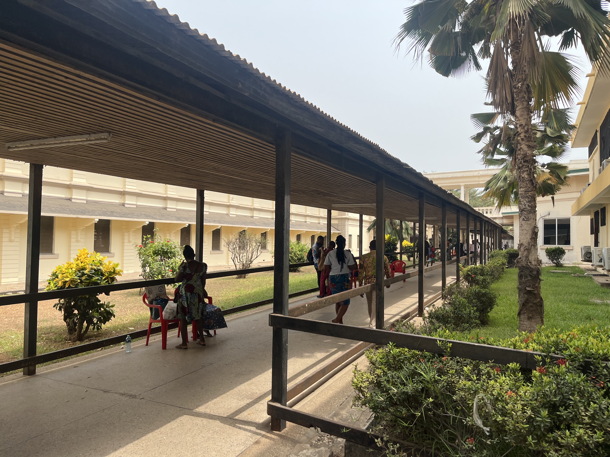
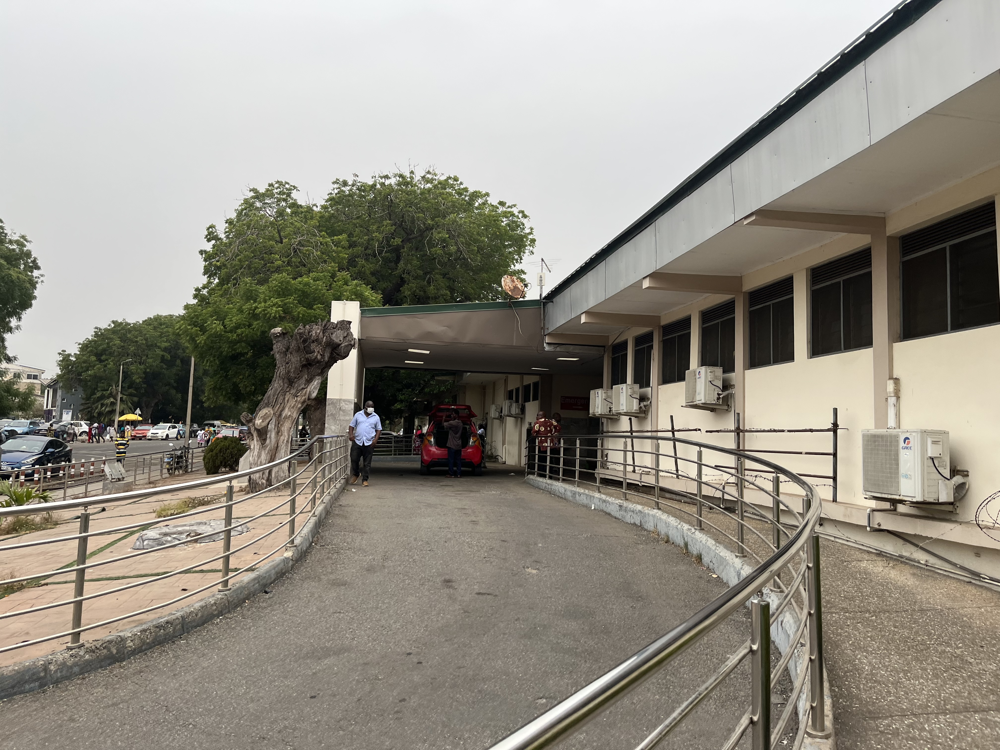
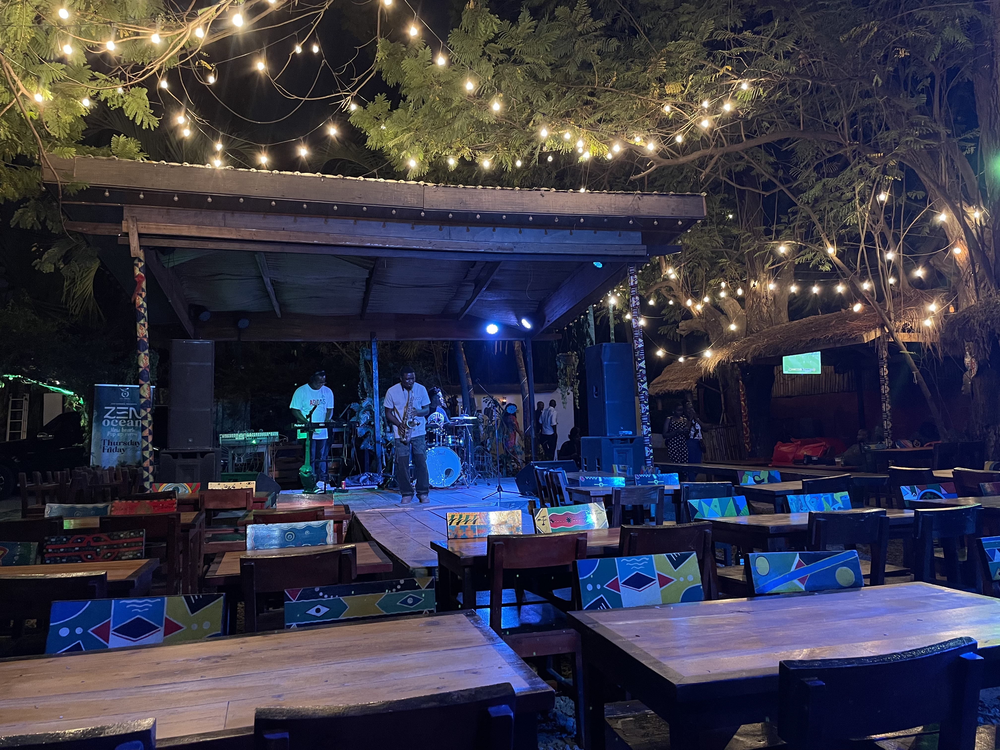

notes from accra
Five days in
Saturday February 3, 2024
We arrived in Accra Tuesday night and spent the evening settling in to our place. Ellelan and I are renting an AirBnB near the Labone and La neighborhoods in Accra, which puts us about a 25 minute drive away from the hospital but closer to the downtown and beach. We're staying in a spacious two bedroom apartment on the second floor of a three-story building, with another AirBnB unit on the third floor. Our neighborhood is densely populated with local everyday Ghanaians. Several stalls and vendors line the street, and we face an elementary school.
Week one in the hospital has been a bit touch and go as I adjust to the new environment and structure. The first day (Wednesday) mostly involved some paperwork and a mini-orientation. By the time I made it to the wards on Wednesday, I accidentally joined the house officers and junior residents (more on this later) for their rounds. I tagged along for senior resident rounds on Thursday with the same group. Then Friday, the Head of Department of Medicine informed me that I was rounding with the wrong group. She then placed me among a cohort of final-year medical students on the medicine wards and encouraged me to integrate myself in their daily activities instead.
I learned that the educational system here is a bit different than the American structure. In the U.S., one typically does four years of undergrad, then four years of med school, followed by residency and possible subspecialty fellowship. Here, med school starts immediately after high school but lasts for six years instead. After graduating, you train as a "house officer" for two years, during which you rotate through internal medicine, ob/gyn, surgery, and pediatrics. Following this house-job, you work as a medical officer (or "MO") for one to two years before eventually applying for residency in your chosen field. In internal medicine, "junior residents" train for 2-3 years and then have the option to further specialize in a clinical specialty (e.g., cardiology, nephrology, etc.) as a "senior resident" for 2-3 more years. Upon completion of senior residency, you finally become a consultant. Previously, I thought that the Ghanaian system for becoming a doctor was shorter than the American system since med school starts earlier, but I can now appreciate that it's essentially the same overall time, if not longer.
Despite these structural differences in medical education, there are still many parallels between American and Ghanaian roles. For example, house officers and medical interns seem to share fairly similar responsibilities. However, final-year Ghanaian medical students here apparently have fewer clinical responsibilities compared to their American counterparts. Clinical experiences for final-year Ghanaian students more closely resemble the curriculum for third-year American students on clerkships rather than fourth-year American students on sub-internships. This amounts to more observation. It seems that Ghanaian medical trainees build direct patient care experience after school with their stringent requirements for post-graduate clinical training before starting residency (e.g., house-job + medical officer duty). As I was directed to spend time with the medical students as opposed to the house officers and residents, I am curious how much clinical exposure I will have. My impression is that there will still be opportunities to see interesting cases, but I may have to take some initiative to seek them out. If possible, I’d like to see some complex infectious disease presentations and cardiology practices.
Outside the hospital in our time off, we've been trying to explore Accra. We have yet to establish a routine since every day has been so different, but it looks like we will get to work early in the morning and leave mid-afternoon. See below for some scenes from Korle Bu and life in Accra so far.
Scenes from Korle Bu
Jamieson and me
Our delegation from Yale consisted of five graduating medical students, including myself, Ellelan, Jamieson and two other classmates.

Ellelan on the first day
On our first day, we met the dean of the medical school and got acquainted with the heads of department for medicine and surgery.

Walkway by the clinic
The Korle Bu campus consists of several buildings connected by these outdoor covered walkways. This is the view outside the National Cardiothoracic Centre.

Accident & Emergency Centre
This is the driveway up to the Korle Bu Accident & Emergency Centre, which is functionally an emergency department and trauma bay.

Clinical lecture theatre
Adjoining the medical wards of the hospital, the clinical lecture theatre feels like the home base for academic medicine at Korle Bu. On Friday mornings, all the medical staff (including house officers, residents, and consultants) and students attend a clinical case conference, which seems fairly similar to Grand Rounds. On other days, students may have lectures or tutorials here.

Life in Accra
Dinner in Labone
On our third night, we went to dinner at Zen Garden, a restaurant in the Labone neighborhood near our apartment. We ate outside underneath a canopy of strung between trees while listening to some live music. The other patrons seemed like to be a mix of Ghanaians and foreigners. Even on weekdays, it seems like the evenings start later out here.
